🌑 All Dark Pals in Palworld (1.0)
There are 73 dark-element Pals in Palworld 1.0 — 33 can be caught in the wild and 40 are breed-only. Sorted by Paldeck number. Click any Pal for its full breeding guide.
Complete Dark Pal list
| # | Pal | Element | Work suitability | How to get |
|---|---|---|---|---|
| #9 | Water/Dark | Handiwork 2, Watering 1, Gathering 1, Transporting 1 | 🥚 Breed only | |
| #16 | Dark | Handiwork 1, Mining 1, Transporting 1, Farming 1 | ✅ Wild | |
| #19 | 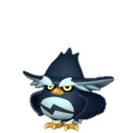 Hoocrates | Dark | Gathering 1 | ✅ Wild |
| #22 | Dark | Handiwork 1, Gathering 1, Transporting 1 | ✅ Wild | |
| #24 | 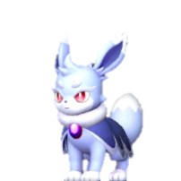 Nox | Dark | Gathering 1 | ✅ Wild |
| #27 | Dark | Gathering 1, Farming 1 | ✅ Wild | |
| #30 | Killamari | Dark/Water | Transporting 2, Watering 1, Gathering 1 | ✅ Wild |
| #34 | Dark | Planting 2, Farming 1 | 🥚 Breed only | |
| #46 | Water/Dark | Watering 2, Handiwork 1, Medicine Production 1, Transporting 1 | 🥚 Breed only | |
| #47 | Dark | Handiwork 2, Transporting 2, Mining 1 | ✅ Wild | |
| #48 | Water/Dark | Watering 2, Handiwork 2, Transporting 2 | 🥚 Breed only | |
| #50 | Dark | Handiwork 2, Lumbering 1, Medicine Production 1, Transporting 1 | 🥚 Breed only | |
| #52 | Dark | Mining 3, Gathering 2, Transporting 2 | ✅ Wild | |
| #56 | Dark | Handiwork 2 | ✅ Wild | |
| #57 | Dark | Lumbering 2, Farming 1 | ✅ Wild | |
| #64 | 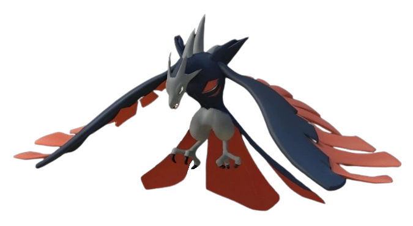 Vanwyrm | Fire/Dark | Transporting 3, Kindling 2 | ✅ Wild |
| #65 | Felbat | Dark | Medicine Production 3 | ✅ Wild |
| #68 | 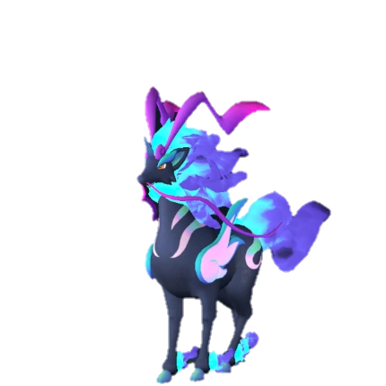 Pyrin Noct | Fire/Dark | Kindling 4, Lumbering 3 | ✅ Wild |
| #69 | Dark | Handiwork 3, Medicine Production 3, Mining 2, Transporting 2 | ✅ Wild | |
| #71 | Dark | Handiwork 3, Gathering 3, Medicine Production 2, Transporting 2 | ✅ Wild | |
| #73 | Dark | Handiwork 1, Gathering 1, Transporting 1 | ✅ Wild | |
| #78 | Fire/Dark | Kindling 4, Handiwork 4, Transporting 2 | 🥚 Breed only | |
| #79 | Dark | Handiwork 3, Medicine Production 3, Transporting 2 | ✅ Wild | |
| #79 | Dark/Fire | Kindling 3, Handiwork 3, Medicine Production 3, Transporting 2 | 🥚 Breed only | |
| #80 | 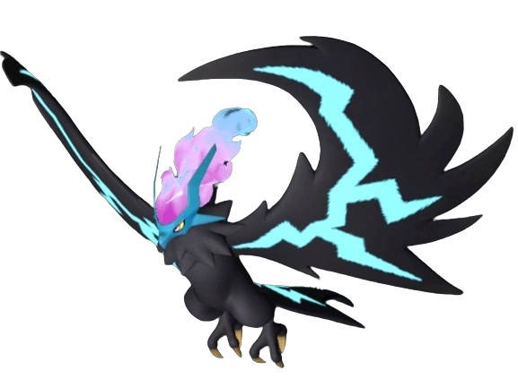 Helzephyr | Dark | Transporting 3 | ✅ Wild |
| #85 | Fire/Dark | Lumbering 5, Kindling 2, Handiwork 2, Transporting 2, Gathering 1 | 🥚 Breed only | |
| #89 | 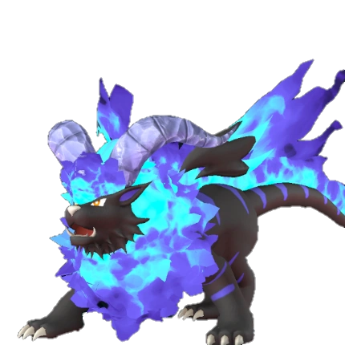 Blazehowl Noct | Fire/Dark | Kindling 5, Lumbering 3 | ✅ Wild |
| #91 | Fire/Dark | Kindling 3, Mining 3, Handiwork 2, Transporting 2 | ✅ Wild | |
| #92 | Dark/Electric | Transporting 2, Electricity Generation 1, Handiwork 1, Medicine Produc | 🥚 Breed only | |
| #97 | Ghangler | Dark/Water | Watering 5, Transporting 2 | 🥚 Breed only |
| #99 | Dark/Ground | Mining 5, Lumbering 3 | ✅ Wild | |
| #100 | Dark/Grass | Planting 3, Gathering 3, Transporting 1 | 🥚 Breed only | |
| #109 | Dark/Electric | Transporting 5, Electricity Generation 4 | ✅ Wild | |
| #111 | 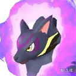 Kitsun Noct | Dark | Kindling 4 | 🥚 Breed only |
| #115 | Dark/Fire | Handiwork 5, Kindling 4, Medicine Production 3, Transporting 2 | 🥚 Breed only | |
| #117 | Dark | Gathering 4, Mining 4 | ✅ Wild | |
| #119 | Dark | Medicine Production 7, Gathering 6, Handiwork 5 | ✅ Wild | |
| #120 | Dark/Ground | Handiwork 5, Medicine Production 4, Transporting 2 | 🥚 Breed only | |
| #126 | 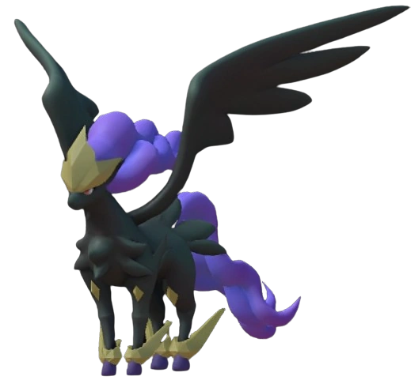 Frostallion Noct | Dark | Gathering 7 | 🥚 Breed only |
| #130 | 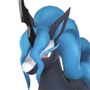 Starryon | Dark | Gathering 5 | 🥚 Breed only |
| #131 | 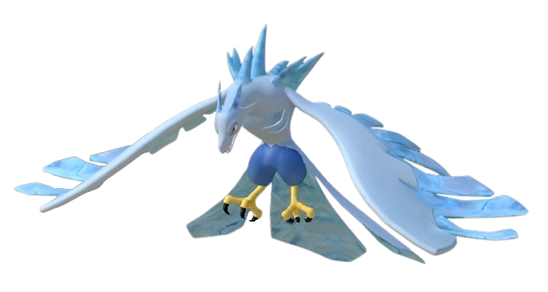 Vanwyrm Cryst | Ice/Dark | Transporting 3, Cooling 2 | ✅ Wild |
| #135 | Dark/Fire | Kindling 3, Handiwork 3, Mining 3, Gathering 2, Farming 2 | ✅ Wild | |
| #138 | Ground/Dark | Mining 6, Transporting 6, Lumbering 5, Planting 3, Gathering 3 | 🥚 Breed only | |
| #139 | Dark/Neutral | Medicine Production 6, Handiwork 1, Transporting 1 | ✅ Wild | |
| #141 | Prixter | Dark/Ground | Lumbering 4, Gathering 2, Medicine Production 2 | 🥚 Breed only |
| #143 | Dark | Handiwork 4, Gathering 4, Transporting 3, Lumbering 2 | 🥚 Breed only | |
| #144 | Grass/Dark | Planting 3, Handiwork 3, Gathering 3, Lumbering 2 | ✅ Wild | |
| #145 | 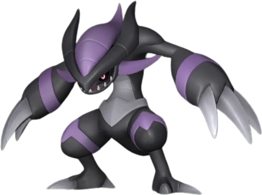 Xenovader | Dark | Lumbering 2, Transporting 2 | ✅ Wild |
| #147 | Grass/Dark | Planting 3, Medicine Production 3, Gathering 2, Handiwork 1, Transport | ✅ Wild | |
| #148 | Dark | Handiwork 4, Transporting 2 | 🥚 Breed only | |
| #149 | 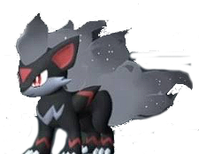 Smokie | Dark | Gathering 2 | 🥚 Breed only |
| #149 | Smokie Cryst | Dark/Ice | Gathering 2, Cooling 2 | 🥚 Breed only |
| #150 | Omascul | Dark | Gathering 5 | 🥚 Breed only |
| #153 | Dark | Handiwork 6, Medicine Production 5, Lumbering 3, Transporting 2 | 🥚 Breed only | |
| #157 | 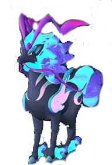 Celesdir Noct | Dark | Lumbering 8, Gathering 4 | 🥚 Breed only |
| #158 | Dragon/Dark | Mining 7, Handiwork 3 | ✅ Wild | |
| #166 | Dark | Handiwork 1, Transporting 1 | 🥚 Breed only | |
| #168 | Dark | Medicine Production 4, Handiwork 3, Transporting 2 | 🥚 Breed only | |
| #171 | Dragon/Dark | Transporting 6 | 🥚 Breed only | |
| #177 | Roujay | Dark | Gathering 5, Transporting 5 | 🥚 Breed only |
| #178 | Dark | Handiwork 6, Gathering 6, Medicine Production 5, Transporting 2 | 🥚 Breed only | |
| #180 | Dark/Fire | Kindling 4, Handiwork 4, Medicine Production 4 | 🥚 Breed only | |
| #181 | Dark | Handiwork 6, Medicine Production 6, Transporting 1 | 🥚 Breed only | |
| #182 | Dark/Neutral | Handiwork 8, Gathering 4, Transporting 2 | 🥚 Breed only | |
| #189 | 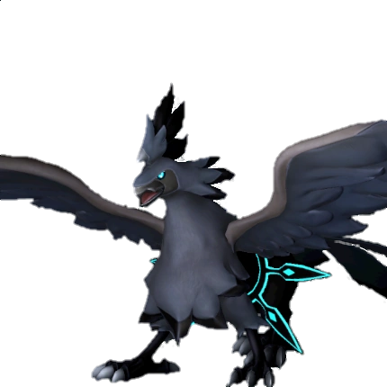 Shadowbeak | Dark | Gathering 2 | ✅ Wild |
| #194 | Grass/Dark | Planting 8, Handiwork 6, Medicine Production 6, Gathering 5, Transport | 🥚 Breed only | |
| #195 | Dark | Handiwork 5, Medicine Production 5, Transporting 4 | 🥚 Breed only | |
| #195 | Dark | Medicine Production 7, Handiwork 6, Transporting 4 | 🥚 Breed only | |
| #196 | Dark/Dragon | Gathering 2 | 🥚 Breed only | |
| #199 | Dark | Lumbering 6, Mining 6 | ✅ Wild | |
| #10000 | Dark | Transporting 4 | 🥚 Breed only | |
| #10001 | Dark | Transporting 1 | 🥚 Breed only | |
| #10005 | Dark | Transporting 1 | 🥚 Breed only |
🥚 Want a breed-only Pal? The PalTool reverse breeding calculator finds the shortest path from wild-catchable parents.
Work rankings: ⛏️ Mining · 🔥 Kindling · 🔨 Handiwork · 🪓 Lumbering · 📦 Transporting · 🌱 Planting · 💧 Watering · 🧺 Gathering · ⚡ Electricity Generation · 💊 Medicine Production · ❄️ Cooling · 🐄 Farming
Pals by element: 🔥 Fire · 💧 Water · 🌿 Grass · ⚡ Electric · ❄️ Ice · 🪨 Ground · 🌑 Dark · 🐉 Dragon · ⚪ Neutral
Data sourced from Palworld 1.0 game files. Last updated: July 2026.